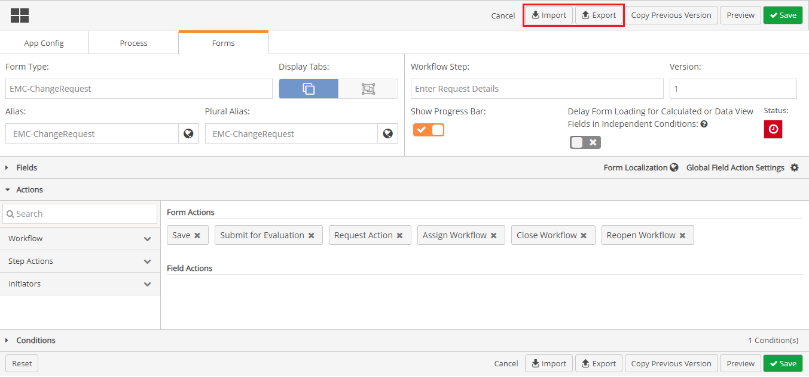
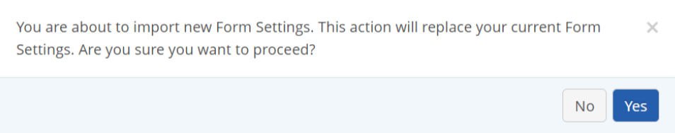
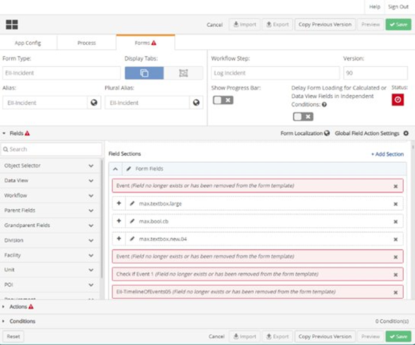
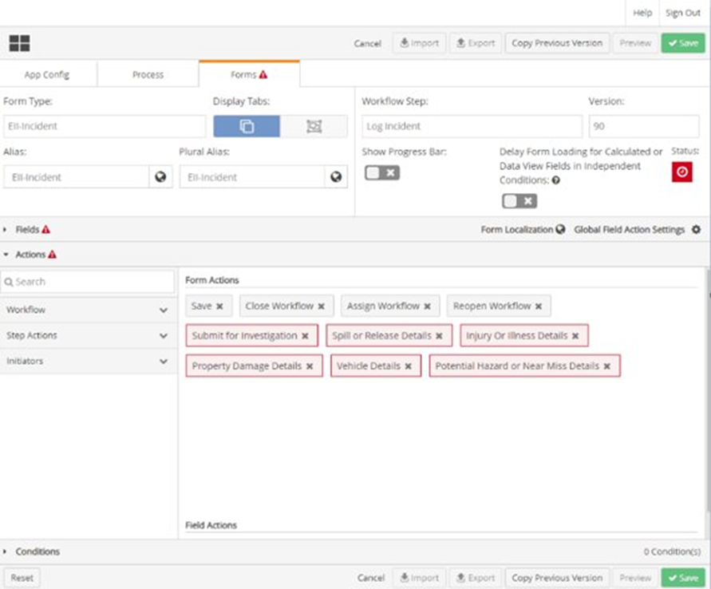
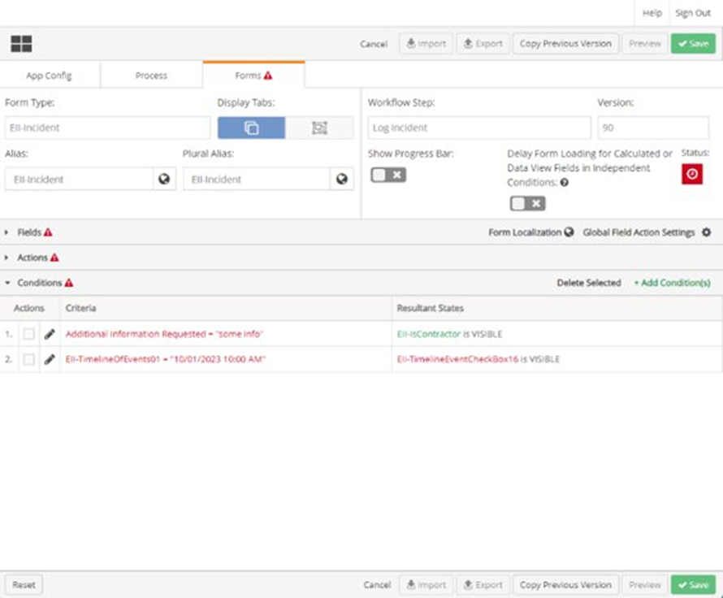

Transferring Settings from one Workflow Step to Another
To Transfer settings from one Workflow Step to Another
From the main menu dropdown, select Designer to open Forms Designer.
Click the Forms tab.
Click the Form Type dropdown textbox and select a workflow type.
Click Workflow Step dropdown textbox and select a workflow step.

Click the Export icon. The file exported is a JSON file. This file is automatically downloaded in the Download folder of File Explorer window.
Save the JSON file to your local computer.
Click the Workflow Step dropdown text and select the destination workflow step.
Click the Import icon. The File Explorer window appears.
Search for and select the JSON file that was saved to your local computer.
Click Open. A prompt displays asking if you want to proceed.

Click Yes.
The following errors may occur:
Fields error: Any Fields that are not found in the destination workflow step, but are in the JSON file being imported, will be highlighted in red as an error. You can resolve the error either by clicking the x icon on the Field to remove it, or by adding one or more of these fields to workflow destination step as needed.

Form Action error: Any Action that are not found in the destination workflow step, but are in the JSON file being imported, will be highlighted in red as an error. You can resolve the error either by clicking the x icon on the Action to remove it, or by adding one or more of these Actions to workflow destination step as needed.

Conditions error: Any Conditions that are valid in the destination workflow step, but are in the JSON file being imported, will be highlighted in red as an error. You can resolve the error by clicking the checkbox in front of the condition, and then clicking Delete Selected.

Once all errors are resolved, click Save on the Designer Form page. The setting is now copied to the workflow step.